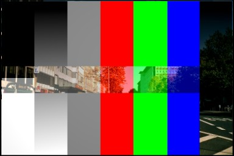

图像 Textures¶
The term 图像 Texture simply means that a graphic image - a pixel grid composed of R, G, B, and sometimes Alpha values - is used as the input source to the texture. As with other types of textures, this information can be used in a number of ways, not only as a simple “decal”.
When the Texture Type 图像 or Movie is selected, three new panels present themselves allowing to control most aspects of how image textures are applied: 图像, 图像 Sampling, and 图像 Mapping.
About 图像 Based Texturing¶
Texture images take up precious memory space, often being loaded into a special video memory bank that is very fast and very expensive, so it is often very small. So, keep the images as small as possible. A 64×64 image takes up only one fourth the memory of a 128×128 image.
For photo-realistic rendering of objects in animations, often larger image textures are used, because the object might be zoomed in on in camera moves. In general, you want to use a texture sized proportionally to the number of pixels that it will occupy in the final render. Ultimately, you only have a certain amount of physical RAM to hold an image texture and the model and to provide work space when rendering your image.
For the most efficient memory usage, image textures should be square, with dimensions as powers of 2, such as 32×32, 64×64, 128×128, 256×256, 1024×1024, 2048×2048, and 4096×4096.
If you can re-use images across different meshes, this greatly reduces memory requirements. You can re-use images if you map those areas of the meshes that “look alike” to a layout that uses the common image. In the overview below, the left image is re-used for both the sphere and a portion of the monkey. The monkey uses two layouts, one which has one UV map of a few faces, and another that has three maps.
How all the parts of UV Texturing work together.
When using file textures, it is very important that you have Mapped the UVs of the mesh, and they are laid out appropriately.
You do not have to UV map the entire mesh. The sphere above on the left has some faces mapped, but other faces use procedural materials and textures. Only use UV Textures for those portions of your mesh where you want very graphic, precise detail. For example, a model of a vase only needs UV Texture for the rim where decorative artwork is incorporated. A throw pillow does not need a different image for the back as the front; in fact many throw pillows have a fabric (procedural material) back.
As another example, you should UV map both eyes of a head to the same image (unless you want one bloodshot and the other clear). Mapping both sides of a face to the same image might not be advisable, because the location of freckles and skin defects are not symmetrical. You could of course change the UV map for one side of the face to slightly offset, but it might be noticeable. Ears are another example where images or section of an images can be mapped to similar faces.
Workflow¶
The process consists of the following steps.
- Create the Mesh. Unwrap it into one or more UV Layouts.
- Create one or more Materials for the Mesh.
- Create one or more images for each UV Layout and aspect of the texture. Either - paint directly on the mesh using Texture Paint in the 3D视图, - load and/or edit an image in the UV/图像编辑器, or - Bake the existing materials into an image for the UV/图像编辑器.
- Apply those images as UV Textures to the mesh to affect one or more aspects of the mesh. This is done by using one or more of the numerous Map To options. For example, - map to Color to affect the diffuse coloring of the mesh, - map to Nor to affect the normal direction to give the surface a bumpy or creased look, or - map to Spec (specularity) to make certain areas look shiny and oily.
- Layer the Textures to create a convincing result.
Using 图像s and Materials¶
To use an image as the color and alpha (transparency) of the texture, you can create an image in an external paint program and tell the UV/图像编辑器 to Open that file as the texture, or you can create a New image and save it as the texture.
If you want to start off by creating an image using an external paint program, you will want to save an outline of your UV faces by using the Save UV Face Layout tool located in the UVs menu. This is discussed here.
Creating an 图像 Texture¶
To create an image within Blender, you have to first create a New Blank 图像 with a uniform color or test grid. After that, you can color the image using the:
- Vertex colors as the basis for an image
- 渲染 Bake image based on how the mesh looks in the scene
After you have created your image, you can modify it using Blender’s built-in Texture Paint or any external image painting program.
Note
See Texture in 3D视图 but does not 渲染
You may be able to see the texture in Textured display mode in the 3D视图; this is all that is required to have textures show up in Blender’s 游戏引擎. 渲染ing, however, requires a material. You must have a Face Textures material assigned to the mesh for it to render using the UV Texture. In the Material settings, Add New material to a selected object and enable Face Textures.
例子s¶
There may be one UV Layout for the face of a character, and another for their clothes. Now, to texture the clothes, you need to create an image at least for the Color of the clothes, and possible a “bump” texture to give the fabric the appearance of some weave by creating a different image for the Normal of the clothes. Where the fabric is worn, for example at the elbows and knees, the sheen, or Specularity, of the fabric will vary and you will want a different image that tells Blender how to vary the Specularity. Where the fabric is folded over or creased, you want another image that maps Displacement to the mesh to physically deform the mesh. Each of these are examples of applying an image as a texture to the mesh.
As another example, the face is the subject of many questions and tutorials. In general, you will want to create a Material that has the basic skin color, appropriate shaders, and sub-surface scattering. Then you will want to layer on additional UV Textures for:
- Freckle map for Color and Normal aspects.
- Subdermal veins and tendons for Displacement.
- Creases and Wrinkles and skin cell stratification for Normal.
- Makeup images for Color.
- Oily maps for Specularity.
- For a zombie, Alpha transparency where the flesh has rotted away.
- Under chin and inside nostrils that receive less Ambient light.
- Thin skin is more translucent, so a map is needed for that.
Each image is mapped by using another Texture Channel. Each of these maps are images which are applied to the different aspects (Color, Normal, Specularity) of the image. Tileable images can be repeated to give a smaller, denser pattern by using the Texture controls for repeat or size.
Layering UV Textures¶
{kind=link}
{kind=link}
Great textures are formed by layering images on top of one another. You start with a base layer, which is the base paint. Each successive layer on top of that is somewhat transparent to let the bottom layers show through, but opaque where you want to add on to details.
To avoid massive confusion, all image textures for a mesh usually use the same UV map. If you do, each image will line up with the one below it, and they will layer on top of one another like the examples shown to the right. To do this, just create one UV Texture (map) as described in this section. Then, create material image textures as described in the procedural materials section. Instead of mapping to Original Coordinates (OrCo), map to UV.
Use that map name repeatedly in the panel by selecting UV and typing the name in the text field. In the example to the right, our UV Texture is called “Head” (you may have to expand the image to see the panel settings). Then, the image texture shown will be mapped using the UV coordinates. In the “Base UV Texture” example to the right, the face has two textures UV mapped; one for a base color, and another for spots, blemishes and makeup.
Both textures use the same UV Texture map as their Map Input, and both affect Color. The Makeup texture is transparent except where there is color, so that the base color texture shows through. Note that the colors were too strong on the image, so they amount of Col affects is turned down to 60% in the second layer (the blemish layer).
Normally, we think of image textures affecting the color of a mesh. Realism and photo-realistic rendering is a combination of many different ways that light interacts with the surface of the mesh. The image texture can be Mapped To not only color, but also Normal (bumpiness) or Reflection or any of the other attributes specified in the Map To panel.
If you paint a grey-scale image (laid out according to the UV Layout) with white where the skin is oily and shiny, and dark where it is not, you would map that input image according to the UV Layout, but have it affect Specularity (not color).
To make portions of a mesh transparent and thus reveal another mesh surface underneath, you would paint a grey-scale image with black where you want the texture transparent, map input to UV, and map it to Alpha (not color). To make portions of a mesh, like a piece of hot metal, appear to glow, you would use a grey-scale image mapped to Emit.
Believe it or not, this is only “the tip of the iceberg!” If everything that is been described here just is not enough for you, the texture nodes feature, introduced in recent versions of Blender, enables you to layer and combine textures in almost any way you can imagine.
Mix and Match Materials¶

You can mix and match procedural materials and textures, vertex paint, and UV textures onto the same mesh.
The image to the right has a world with a red ambient light. The material has both VCol Paint and Face Textures enabled, and receives half of ambient light. A weak cloud texture affects color, mixing in a tan color. The right vertices are vertex painted yellow and the left is unpainted procedural gray. The UV Texture is a stock arrow image from the public domain texture CD. Scene lighting is a white light off to the right. From this information and the User Manual thus far, you should now be able to recreate this image.
You can also assign multiple materials to the mesh based on which faces you want to be procedural and which you want to be texture-mapped. Just do not UV map the faces you want to be procedural.
You can use UV Textures and VertexPaint (V in the 3D视图) simultaneously,
if both are enabled in the Material settings.
The vertex colors are used to modulate the brightness or color of the UV image texture:
- UV Texture is at the base (Face Textures)
- Vertex paint affects its colors, then
- Procedural textures are laid on top of that,
- Area lights shine on the surface, casting shadows and what not, and finally
- Ambient light lights it up.
{kind=link}
A UV Layout can only have one image, although you can tile and animate the image. Since a layout is a bunch of arranged UV Maps, and a UV Map maps many mesh faces, a face can therefore only have one UV Texture image, and the UV coordinates for that face must fit entirely on the image. If you want a face to have multiple images, split the face into parts, and assign each part its own image. (Or you can get fancy with 节点, but that is another story ...)
Using Alpha Transparency¶
{kind=link}
Alpha 0.0 (transparent) areas of a UV 图像 render as black. Unlike a procedural texture, they do not make the base material transparent, since UV Textures do not operate on the base procedural material. The UV texture overrides any procedural color underneath. Procedural Textures are applied on top of UV Textures, so a procedural image texture would override any UV Texture. Transparent (black) areas of a procedural texture mapped to alpha operate on top of anything else, making the object transparent in those places. The only thing that modulates visible parts of a UV Texture are the Vertex Colors. In the example to the right, the finger image is transparent at the cuff and top of the finger and is used as a UV Texture. All three balls have a base material of blue and a marbling texture. The base material color is not used whenever Face Textures is enabled.
The top left ball has not had any vertex painting, and the finger is mapped to the middle band, and the texture is mapped to a pink color. As you can see, the base material has VCol Paint and Face Textures enabled; the base color blue is not used, but the texture is. With no vertex painting, there is nothing to modulate the UV Texture colors, so the finger shows as white. Transparent areas of the UV 图像 show as black.
The top right ball has had a pink vertex color applied to the vertical band of faces (in the 3D视图 editor, select the faces in UV Paint Mode, switch to 顶点绘制模式, pick a pink color, and ). The finger is mapped to the middle vertical band of faces, and VCol and Face Textures are enabled. The texture is mapped to Alpha black and multiplies the base material alpha value which is 1.0. Thus, white areas of the texture are 1.0, and 1.0 times 1.0 is 1.0 so that area is opaque and shows. Black areas of the procedural texture, 0.0, multiply the base material to be transparent. As you can see, the unmapped faces (left and right sides of the ball) show the vertex paint (none, which is gray) and the painted ones show pink, and the middle stripe that is both painted and mapped change the white UV Texture areas to pink. Where the procedural texture says to make the object transparent, the green background shows through. Transparent areas of the UV Texture insist on rendering black.
The bottom ball uses multiple materials. Most of the ball (all faces except the middle band) is a base material that does not have Face Textures (nor Vertex Color Paint - VCol Paint) enabled. Without it enabled, the base blue material color shows and the pink color texture is mixed on top. The middle band is assigned a new material (2 Mat 2) that does have vertex paint and Face Textures enabled. The middle band of faces were vertex painted yellow, so the white parts of the finger are yellow. Where the pink texture runs over the UV texture, the mixed color changes to green, since pink and yellow make a green.
If you want the two images to show through one another, and mix together, you need to use Alpha. The base material can have an image texture with an Alpha setting, allowing the underlying UV Texture to show through.
To overlay multiple UV images, you have several options:
- Create multiple UV Textures which map the same, and then use different images (with Alpha) and Blender will overlay them automatically.
- Use the Composite 节点 to combine the two images via the AlphaOver node, creating and saving the composite image. Open that composited image as the UV Texture.
- Use an external paint program to alpha overlay the images and save the file, and load it as the face’s UV Texture
- Define two objects, one just inside the other. The inner object would have the base image, and the outer image the overlaid image with a material alpha less than one (1.0).
- Use the Material nodes to combine the two images via the AlphaOver or Mix node, thus creating a third noded material that you use as the material for the face. Using this approach, you will not have to UV map; simply assign the material to the face using the Multiple Materials
UV Textures vs. Procedural Textures¶
A Material Texture, that has a Map Input of UV, and is an image texture that is mapped to Color, is equivalent to a UV Texture. It provides much more flexibility, because it can be sized and offset, and the degree to which it affects the color of your object can be controlled in the Map To panel. In addition, you can have different images for each texture channel; one for color, one for alpha, one for normals, one for specularity, one for reflectivity, etc. Procedural textures, like Clouds, are incredibly simple and useful for adding realism and details to an image.
| UV Texture | Procedural Texture |
|---|---|
| 图像 maps to precise coordinates on the selected faces of the mesh | Pattern is generated dynamically, and is mapped to the entire mesh (or portion covered by that material) |
| The 图像 maps once to a range of mesh faces specifically selected | Maps once to all the faces to which that material is assigned; either the whole mesh or a portion |
| 图像 is mapped once to faces. | Size XYZ in the MapInput allows tiling the texture many times across faces. Number of times depends on size of mesh |
| Affect the color and the alpha of the object. | Can also affect normals (bumpiness), reflectivity, emit, displacement, and a dozen other aspects of the mesh’s appearance; can even warp or stencil subsequent textures. |
| Can have many for a mesh | Can be layered, up to 10 textures can be applied, layering on one another. Many mix methods for mixing multiple channels together. |
| Any 图像 type (still, video, rendered). Preset test grid available | Many different presents: clouds, wood grain, marble, noise, and even magic. |
| Provides the UV layout for animated textures | Noise is the only animated procedural texture |
| Takes very limited graphics memory | Uses no or little memory; instead uses CPU compute power |
So, in a sense, a single UV texture for a mesh is simpler but more limited than using multiple textures (mapped to UV coordinates), because they do one specific thing very well: adding image details to a range of faces of a mesh. They work together if the procedural texture maps to the UV coordinates specified in your layout. As discussed earlier, you can map multiple UV textures to different images using the UV Coordinate mapping system in the Map Input panel.
设置¶
图像 设置¶
{kind=link}
In the 图像 Sampling panel we tell Blender which source file to use.
- 图像 or Movie Data-block:
- Browse
- Select an image or video among linked to the blend-file
- Name field
- Internal name of image
- F
- Create a fake user for the image texture
- +
- Replace active texture with a new one
- Folder
- Browse for an image on your computer
- X
- Unlink this image or movie.
- Source:
Where the image come from. What kind of source file to use.
- Generated
- Generated image in Blender.
- Movie
- Movie file.
- 图像 Sequence
- Multiple image files as a sequence.
- Single 图像
- Single image file.
- File for 图像 or Movie texture:
See about supported 图像 formats.
- Pack image
- Embed image into current blend-file
- Path
- Path to file
- 文件浏览器
- Find a file on your computer.
Hold
Shiftto open the selected file andCtrlto browse a containing directory. - Reload
- Reloads the file. Useful when an image has been rework in an external application.
- Input Color Space
Color space of the image or movie on disk
- XYZ
- XYZ space.
- VD16
- The simple video conversion from a gamma 2.2 sRGB space.
- sRGB
- Standart RGB display space.
- Raw
- Raw space.
- Non-Color
- Color space used for images which contains non-color data (i.e. normal maps).
- Linear ACES
- ACES linear space.
- Linear
- 709 (full range). Blender native linear space.
- View as 渲染
- Apply render part of display transformation when displaying this image on the screen.
- Use Alpha
Use the alpha channel information from the image or make image fully opaque
- Straight
- Transparent RGB and alpha pixels are unmodified.
- Premultiplied
- Transparent RGB pixels of an image are multiplied by the image’s alpha value.
- Fields
Work with field images. 视频 frames consist of two different images (fields) that are merged. This option ensures that when Fields are rendered, the correct field of the image is used in the correct field of the rendering. MIP Mapping cannot be combined with Fields.
- Upper First
- Order of video fields - upper field first.
- Lower First
- Order of video fields - lower field first.
{kind=link}
For Generated source there are the specific options: X and Y size
Width and height of image to be generated.
- Generated 图像 Type
Which kind of image to be generated
- Blank
- Generate a blank image.
- UV Grid
- Generated grid to test UV mappings.
- Color Grid
- Generated improved UV grid to test UV mappings.
- Float Buffer
- Generate floating point buffer.
About specific options for movie and image sequence source. see here
图像 Sampling¶
In the 图像 Sampling panel we can control how the information is retrieved from the image.

Background image. |
{kind=link}
The two images presented here are used to demonstrate the different image options. The background image is an ordinary JPG-file, the foreground image is a PNG-file with various alpha and greyscale values. The vertical bar on the right side of the foreground image is an Alpha blend, the horizontal bar has 50% alpha.

Foreground image with Use alpha. The alpha values of the pixels are evaluated. |
{kind=link}
{kind=link}
- Alpha
Options related to transparency
- Use
- Works with PNG and TGA files since they can save transparency information (Foreground 图像 with UseAlpha). Where the alpha value in the image is less than 1.0, the object will be partially transparent and stuff behind it will show.
- Calculate
- Calculate an alpha based on the RGB values of the 图像. Black (0,0,0) is transparent, white (1,1,1) opaque. Enable this option if the image texture is a mask. Note that mask images can use shades of gray that translate to semi-transparency, like ghosts, flames, and smoke/fog.
- Invert
- Reverses the alpha value. Use this option if the mask image has white where you want it transparent and vice-versa.
- Flip X/Y Axis
- Rotates the image 90 degrees counterclockwise when rendered.
{kind=link}
- Normal Map
This tells Blender that the image is to be used to create the illusion of a bumpy surface, with each of the three RGB channels controlling how to fake a shadow from a surface irregularity. Needs specially prepared input pictures. See Bump and Normal Maps.
- Normal Map Space:
- Tangent: Object: World: 相机:
- Derivative Map
- Use red and green as derivative values.
- MIP Map
MIP Maps are pre-calculated, smaller, filtered Textures for a certain size. A series of pictures is generated, each half the size of the former one. This optimizes the filtering process. By default, this option is enabled and speeds up rendering (especially useful in the game engine). When this option is OFF, you generally get a sharper image, but this can significantly increase calculation time if the filter dimension (see below) becomes large. Without MIP Maps you may get varying pictures from slightly different camera angles, when the Textures become very small. This would be noticeable in an animation.
- MIP Map Gaussian filter
- Used in conjunction with MIP Map, it enables the MIP Map to be made smaller based on color similarities. In the game engine, you want your textures, especially your MIP Map textures, to be as small as possible to increase rendering speed and frame rate.
{kind=link}
{kind=link}
- Interpolation
- This option interpolates the pixels of an image. This becomes visible when you enlarge the picture. By default, this option is on. Turn this option off to keep the individual pixels visible and if they are correctly anti-aliased. This last feature is useful for regular patterns, such as lines and tiles; they remain ‘sharp’ even when enlarged considerably. When you enlarge this 10×10 pixel 图像
the difference with and without Interpolation is clearly visible. Turn this image off if you are using digital photos to preserve crispness.
- Filter
The filter size used in rendering, and also by the options MipMap and Interpolation. If you notice gray lines or outlines around the textured object, particularly where the image is transparent, turn this value down from 1.0 to 0.1 or so.
- Texture Filter Type
Texture filter to use for image sampling. Just like a pixel represents a pic ture el ement, a texel represents a tex ture el ement. When a texture (2D texture space) is mapped onto a 3D model (3D model space), different algorithms can be used to compute a value for each pixel based on samplings from several texels.
- Box
- A fast and simple nearest-neighbor interpolation known as Monte Carlo integration
- EWA (Elliptical Weighted Average)
One of the most efficient direct convolution algorithms developed by Paul Heckbert and Ned Greene in the 1980s. For each texel, EWA samples, weights, and accumulates texels within an elliptical footprint and then divides the result by the sum of the weights.
- Eccentricity
- Maximum Eccentricity. Higher values give less blur at distant/oblique angles, but is slower
- FELINE (Fast Elliptical Lines)
Uses several isotropic probes at several points along a line in texture space to produce an anisotropic filter to reduce aliasing artifacts without considerably increasing rendering time.
- Probes
- Number of probes to use. An integer between 1 and 256. Further reading: McCormack, J; Farkas, KI; Perry, R; Jouppi, NP (1999) Simple and Table Feline: Fast Elliptical Lines for Anisotropic Texture Mapping, WRL
- Area
Area filter to use for image sampling
- Eccentricity
- Maximum Eccentricity. Higher values give less blur at distant/oblique angles, but is slower
- Filter Size
- The filter size used by MIP Map and Interpolation
- Minimum Filter Size
- Use Filter Size as a minimal filter value in pixels
图像 Mapping¶
{kind=link}
In the 图像 Mapping panel, we can control how the image is mapped or projected onto the 3D model.
Extension:
- Extend
- Outside the image the colors of the edges are extended
- Clip
- Clip to image size and set exterior pixels as transparent. Outside the image, an alpha value of 0.0 is returned. This allows you to ‘paste’ a small logo on a large object.
- Clip Cube
- Clips to cubic-shaped area around the images and sets exterior pixels as transparent. The same as Clip, but now the ‘Z’ coordinate is calculated as well. An alpha value of 0.0 is returned outside a cube-shaped area around the image.
- Repeat
The image is repeated horizontally and vertically
- Repeat
- X/Y repetition multiplier
- Mirror
- Mirror on X/Y axes. This buttons allow you to map the texture as a mirror, or automatic flip of the image, in the corresponding X and/or Y direction.
- Checker
Checkerboards quickly made. You can use the option size on the Mapping panel as well to create the desired number of checkers.
- Even / Odd
- Set even/odd tiles
- Distance
- Governs the distance between the checkers in parts of the texture size
- Crop Minimum / Crop Maximum
- The offset and the size of the texture in relation to the texture space. Pixels outside this space are ignored. Use these to crop, or choose a portion of a larger image to use as the texture.